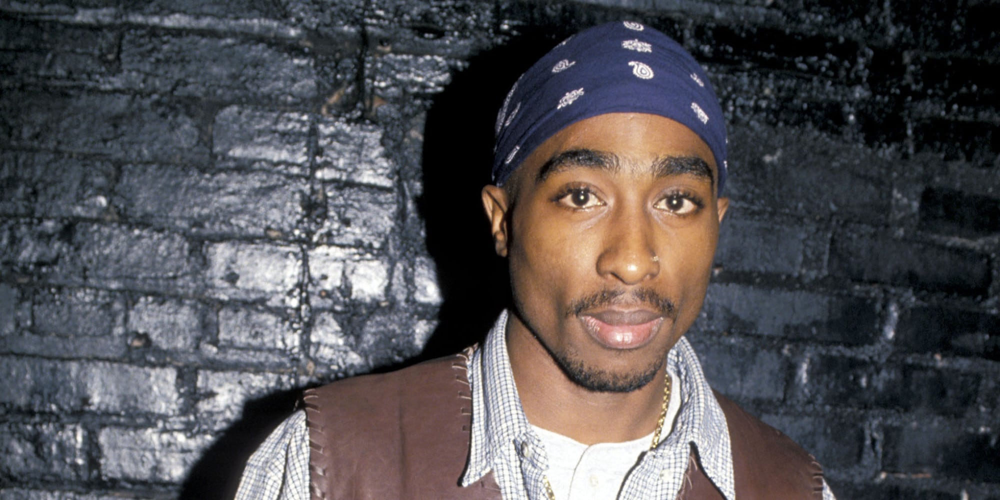

Tupac Amaru Shakur
Tupac Amaru Shakur, quien nació con nombre Lesane Parish Crooks, mejor conocido como 2 Pac o Tupac, fue un cantante, actor, compositor, productor, escritor, poeta, guionista y bailarín del género cultural hip hop a nivel mundial. Nació el 16 de junio de 1971 en Harlem del Este, Nueva York, Estados Unidos.
A los 15 años se mudaron a Baltimore, en Maryland en donde fue aceptado en la Escuela de Artes de Baltimore. A Tupac le gustaban sus clases y tuvo la oportunidad de estudiar teatro, jazz, ballet, entre otras cosas. Su gran talento desde joven le permitió estar en obras de Shakespeare y en un papel de ratón en El Cascanueces.Su estilo fue fuertemente influenciado por el Partido Panteras Negras, el nacionalismo negro, el igualitarismo y la libertad, cosas que siempre reflejó en las letras de sus temas, atacando siempre las injusticias sociales y el maltrato de los policías con las personas. Cabe destacar que a lo largo de su vida tuvo experiencias que fueron marcando y evolucionando su manera de escribir sus temas, por lo que en las últimas producciones musicales se notaba un poco más agresivo en lo que expresaba.
Luego de asistir a una pelea de boxeo entre Mike Tyson y Bruce Seldon el 7 de septiembre de 1996, tuvo una pelea en el vestíbulo del sitio con "Baby Lane" Anderson. Posterior a ello se dirigieron al Club 662, propiedad de Death Row Records. En el camino tuvieron ciertos encuentros sospechosos, primero un carro que lo fotografió, luego unos policías lo detuvieron por el exceso de volumen en la música del carro y finalmente un par de chicas que se pararon en un semáforo a hablar con él. Posteriormente un coche modelo Cadillac blanco disparó 12 tiros, alcanzado por tres de ellos, uno le impactó el pecho, el otro la mano y el último el fémur y la pelvis.
